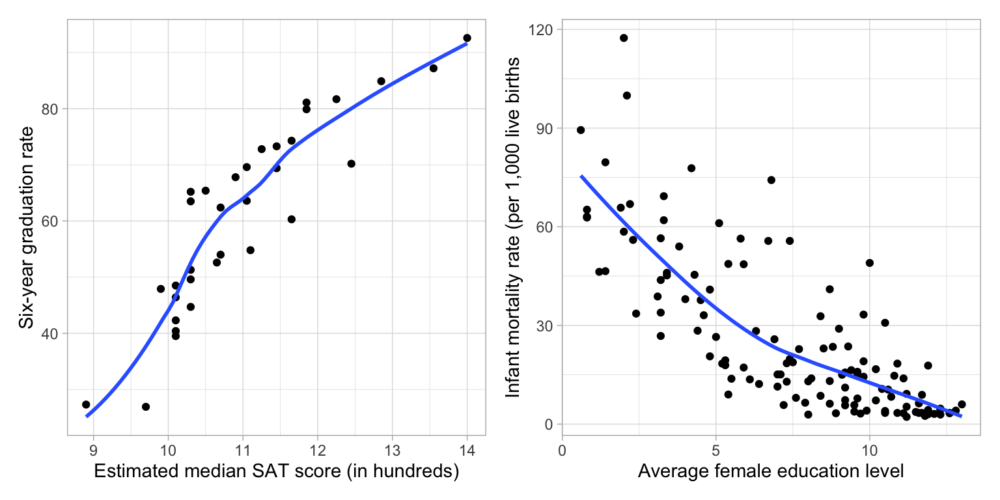
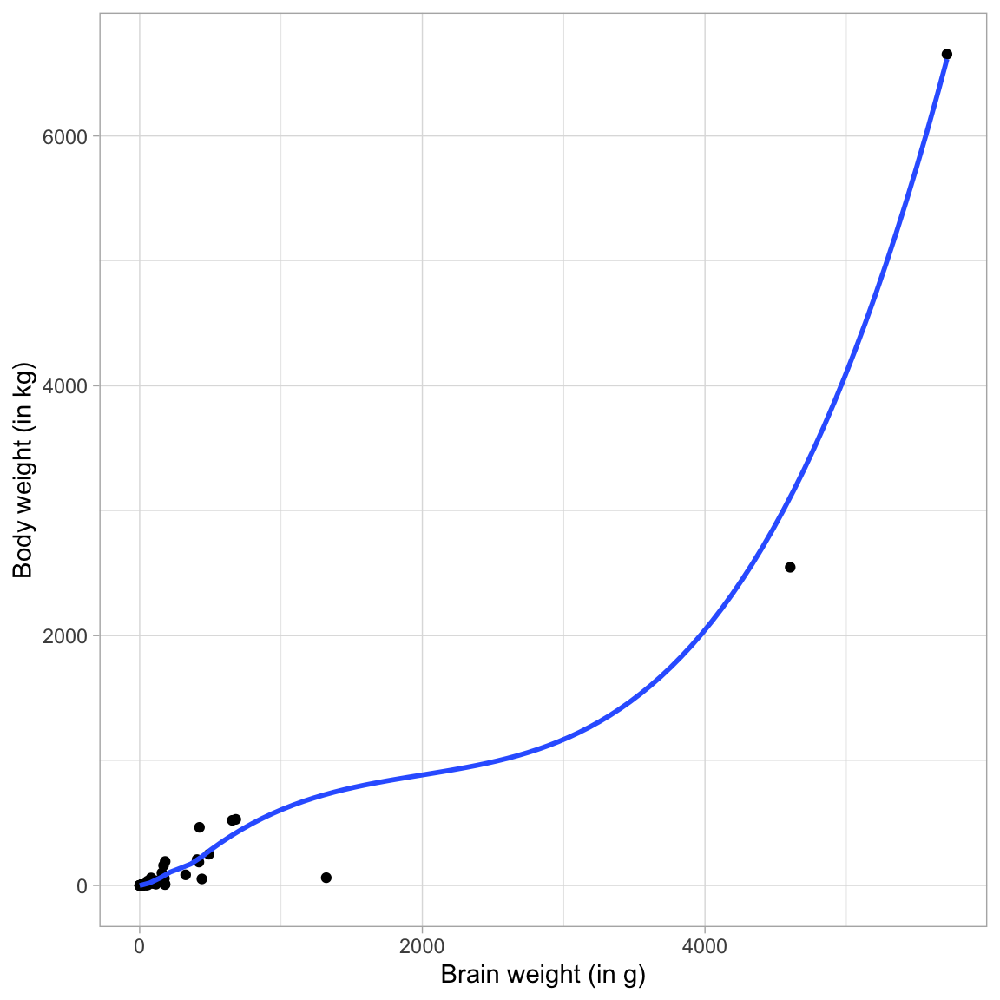
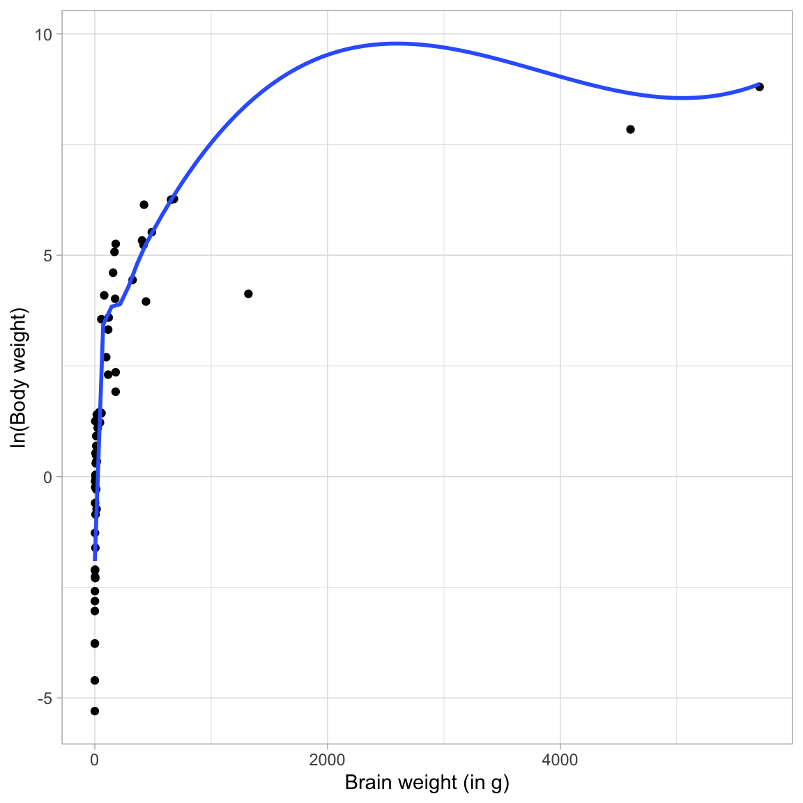
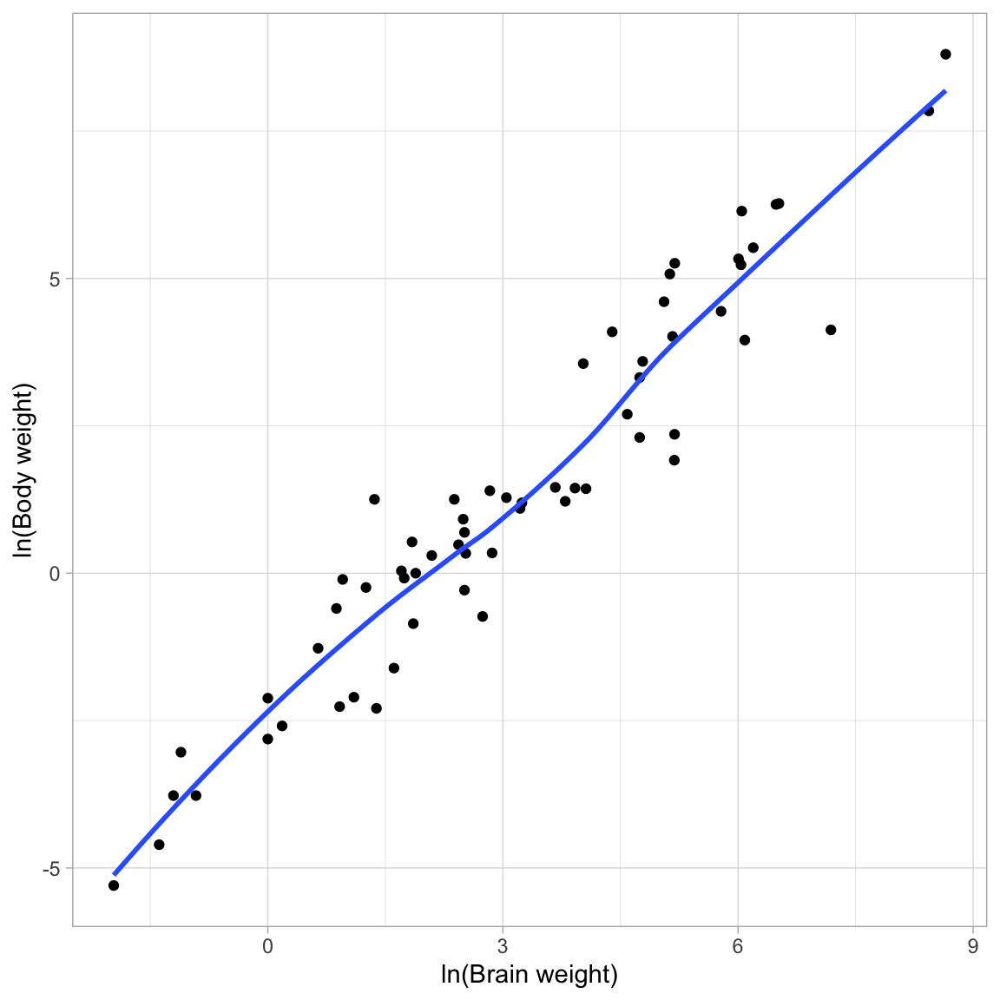
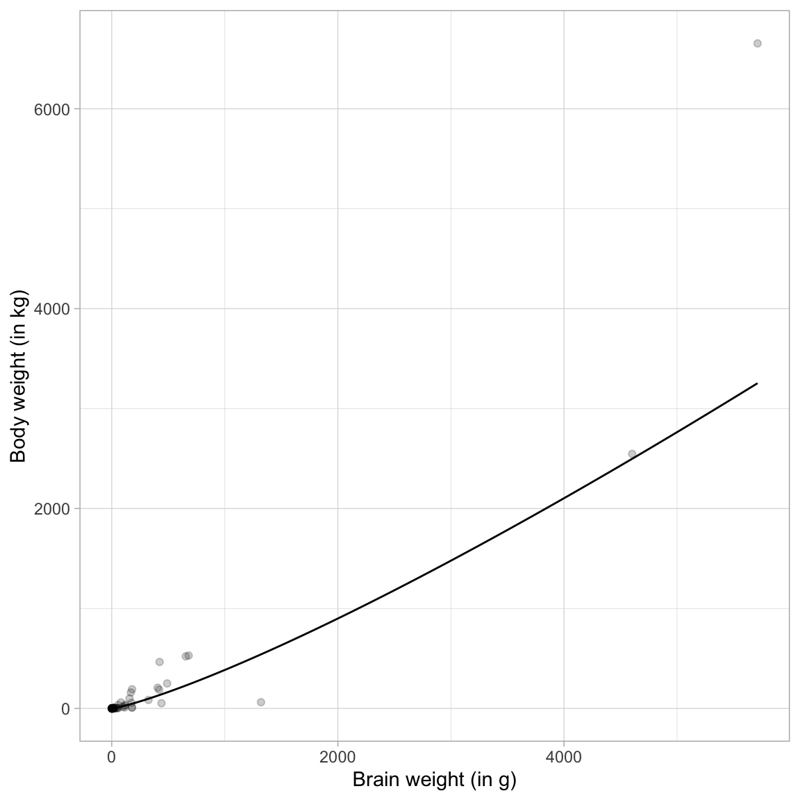
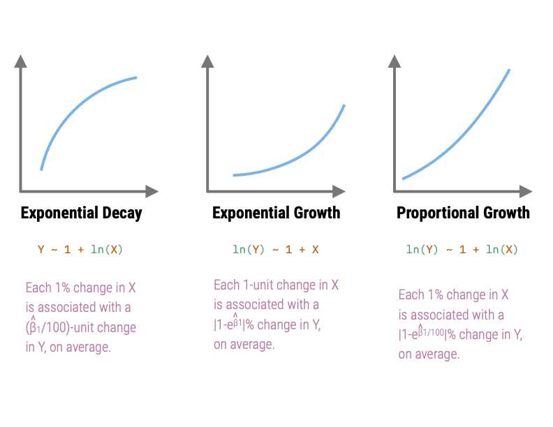

12 Rule of the Bulge—An Example”
In this set of notes you will learn about power transformations, how to use power transformations to re-express data so that the re-expressed data meet the assumption of “linearity” (i.e., straighten” curvilinear data), and see this in an empirical example.
12.1 Power Transformations
All of the transformations, or re-expressions, of data we have seen in this course are power transformations. Power transformations essentially transform some variable X using the function:
\[ X \rightarrow X^{(p)} \]
where p is some power. Here are some important ideas about power transformations:
- If we let \(p=1\), this transformation maps X to X (no transformation).’
- We refer to transformations where \(p>1\) as upward transformations.
- We refer to transformations where \(p<1\) as downward transformations.
- Since the transformation using \(p=0\) would be pointless (it would transform all the X-values to 1), we attribute \(p=0\) as the log-transformation.
This is called the ladder of transformations, since we can think about these different power transformations as a ladders going up or down from the \(p=1\) (no transformation) starting point.
12.2 Rule of the Bulge
The Rule of the Bulge is a technique introduced by John Tukey and Frederick Mosteller for “straightening” data to better meet the assumption of linearity. Note that the following figure shows the four monotonic curves; one in each of the four quadrants:

The Rule of the Bulge tells us:
- If the data have a shape similar to that shown in the Quadrant 1, then the data analyst can try to re-express the variables by using an upward transformation of X (up-the-ladder), an upward transformation of Y, or both.
- If the data have a shape similar to that shown in the Quadrant 2, then the data analyst can try to re-express the variables by using a downward transformation of X (down-the-ladder), an upward transformation of Y (up-the-ladder), or both.
- If the data have a shape similar to that shown in the Quadrant 3, then the data analyst can try to re-express the variables by using a downward transformation of X (down-the-ladder), a downward transformation of Y, or both.
- If the data have a shape similar to that shown in the Quadrant 4, then the data analyst can try to re-express the variables by using an upward transformation of X (up-the-ladder), a downward transformation of Y (down-the-ladder), or both.
FYI
The relationships in Quadrants 1 and 4 depict exponential growth. These relationships both have a growing rate-of-change for larger x-values, albeit in different directions. The model in Quadrant 1 is a negative exponential growth model while that in Quadrant 4 is a positive exponential growth model.
The relationships in Quadrants 1 and 4 are referred to as exponential decay models, since they both have a decaying rate-of-change for larger x-values (again in different directions). The model in Quadrant 2 is a positive exponential decay model while that in Quadrant 3 is a negative exponential decay model.
To illustrate, consider the the non-linear relationships depicted in the following two scatterplots.
Code
# Load libraries
library(tidyverse)
library(patchwork)
# Import data
mn = read_csv(file = "https://raw.githubusercontent.com/zief0002/fluffy-ants/main/data/mn-schools.csv")
fert = read_csv(file = "https://raw.githubusercontent.com/zief0002/fluffy-ants/main/data/fertility.csv")
# Create scatterplot of graduation data
p1 = ggplot(data = mn, aes(x = sat, y = grad)) +
geom_point() +
geom_smooth(method = "loess", se = FALSE) +
theme_light() +
xlab("Estimated median SAT score (in hundreds)") +
ylab("Six-year graduation rate")
# Create scatterplot of fertility data
p2 = ggplot(data = fert, aes(x = educ_female, y = infant_mortality)) +
geom_point() +
geom_smooth(se = FALSE) +
xlab("Average female education level") +
ylab("Infant mortality rate (per 1,000 live births") +
theme_light()
# Layout plots
p1 | p2

The scatterplot of the relationship between median SAT scores and graduation rate indicates a relationship similar to that in Quadrant 2 (positive exponential decay). This suggests that we could try to: (1) Re-express X using a downward transformation; (2) re-express Y using an upward transformation, or (3) both. In the notes, we fitted a model in which we log-transformed the median SAT scores (downward transformation of X) to “straighten” the relationship,
Y ~ 1 + ln(X)The scatterplot of the relationship between female education level and infant mortality rate indicates a relationship similar to that in Quadrant 3 (negative exponential decay). This suggests that we could try to: (1) Re-express X using a downward transformation; (2) re-express Y using a downward transformation, or (3) both. Below is the plot in which we re-expressed infant mortality rate using a log-transform (downward transformation.)
ln(Y) ~ 1 + X12.2.1 Caution ⚠️
Sometimes these re-expressions will not be adequate. In some cases, you might not be able to “straighten” the data enough to meet the assumption. This is because these transformations “deteriorate” or “spuriously increase” the information contained in the data. As you use re-expressions further down-the-ladder, the variation in the re-expressed data decreases (Less variation = less information). Eventually, the variation in the re-expressed data will be so small that the values become indistinguishable (no information).
In the other direction, as you use re-expressions further up-the-ladder, the variation in the re-expressed data increases (more variation = more information), albeit spuriously. Essentially, we are adding information that is not truly in the data. This might lead us to finding results that aren’t really there, or over-emphasizing relationships.
FYI
Re-expressions that only go a little way up- or down-the-ladder are fine. Just beware if you need to go too far up- or down-the-ladder to straighten your data. In those cases you may want to use a different method of estimating the model than OLS (e.g., non-linear least squares).
12.3 Empirical Example
We will use the mammals.csv data to predict variation in body weight for mammals using their brain weight as a predictor. See the data codebook for additional information.
# Load libraries
library(broom)
library(tidyverse)
# Import data
mammal = read_csv("https://raw.githubusercontent.com/zief0002/fluffy-ants/main/data/mammals.csv")
# View data
mammal# A tibble: 62 × 11
species body_weight brain_weight slow_wave paradox total_sleep lifespan
<chr> <dbl> <dbl> <dbl> <dbl> <dbl> <dbl>
1 African elep… 6654 5712 NA NA 3.3 38.6
2 African gian… 1 6.6 6.3 2 8.3 4.5
3 Arctic fox 3.38 44.5 NA NA 12.5 14
4 Arctic groun… 0.92 5.7 NA NA 16.5 NA
5 Asian elepha… 2547 4603 2.1 1.8 3.9 69
6 Baboon 10.6 180. 9.1 0.7 9.8 27
7 Big brown bat 0.023 0.3 15.8 3.9 19.7 19
8 Brazilian ta… 160 169 5.2 1 6.2 30.4
9 Cat 3.3 25.6 10.9 3.6 14.5 28
10 Chimpanzee 52.2 440 8.3 1.4 9.7 50
# ℹ 52 more rows
# ℹ 4 more variables: gestation <dbl>, predation <dbl>, exposure <dbl>,
# danger <dbl># Examine relationship
ggplot(data = mammal, aes(x = brain_weight, y = body_weight)) +
geom_point() +
geom_smooth(se = FALSE) +
theme_light() +
xlab("Brain weight (in g)") +
ylab("Body weight (in kg)")

The relationship is non-linear, and shows a positive exponential growth curve. Using the Rule of the Bulge mnemonic, we identify this curve in the lower right-hand quadrant. To help straighten this curve we can either:
- Transform X using an upward transformation; or
- Transform Y using a downward transformation
Since there is only a single predictor, transforming Y is low-cost (it doesn’t affect the relationship between Y and other predictors), whereas transforming X with an upward transformation means we would have to include more than one effect in the model (e.g., \(X\) and \(X^2\)).
Because of this I will transform Y using the log-transformation. Looking at the relationship between ln(body weight) and brain weight, we will see if this “straightened” the relationship.
ggplot(data = mammal, aes(x = brain_weight, y = log(body_weight))) +
geom_point() +
geom_smooth(se = FALSE) +
theme_light() +
xlab("Brain weight (in g)") +
ylab("ln(Body weight)")

The transformed relationship is still non-linear, and shows positive exponential decay. Again, using the Rule of the Bulge mnemonic, we identify this curve in the upper left-hand quadrant. To help straighten this curve we can either:
- Transform X using an downward transformation; or
- Transform Y using an upward transformation
Since we just used a downward transformation on Y to fix the last relationship, using an upward transformation now would just re-introduce the initial problem. Because of this I will transform X using the log-transformation. Looking at the relationship between ln(body weight) and ln(brain weight), we will see if this “straightened” the relationship.
ggplot(data = mammal, aes(x = log(brain_weight), y = log(body_weight))) +
geom_point() +
geom_smooth(se = FALSE) +
theme_light() +
xlab("ln(Brain weight)") +
ylab("ln(Body weight)")

This relationship looks linear! So we can fit a linear model that uses ln(brain weight) to predict variation in ln(body weight). We can then use back-transformations and a plot of the fitted equation to interpret the coefficients in the model.
12.3.1 Fit Linear Model
Fitting the linear model and looking at it’s output:
# Fit model
lm.1 = lm(log(body_weight) ~ 1 + log(brain_weight), data = mammal)
# Model-level output
glance(lm.1)# A tibble: 1 × 12
r.squared adj.r.squared sigma statistic p.value df logLik AIC BIC
<dbl> <dbl> <dbl> <dbl> <dbl> <dbl> <dbl> <dbl> <dbl>
1 0.921 0.919 0.886 697. 9.84e-35 1 -79.5 165. 171.
# ℹ 3 more variables: deviance <dbl>, df.residual <int>, nobs <int># Coefficient-level output
tidy(lm.1)# A tibble: 2 × 5
term estimate std.error statistic p.value
<chr> <dbl> <dbl> <dbl> <dbl>
1 (Intercept) -2.51 0.184 -13.6 4.98e-20
2 log(brain_weight) 1.22 0.0464 26.4 9.84e-35Interpreting this output:
- Differences in mammals’ brain weight explain 92.1% of the variation in body weight.
The fitted equation is:
\[ \hat{\ln(\mathrm{Body~Weight})}_i = -2.51 + 1.22\bigg[\ln(\mathrm{Brain~Weight}_i)\bigg] \]
- Mammals with a log(brain weight) of 0 have a predicted log(body weight) of \(-2.51\), on average.
- Each one-unit change in log(brain weight) is associated with a change in log(body weight) of 1.22-units, on average.
We can also back-transform these log entities to get a better interpretation of the coefficients. For the intercept, when log(brain weight) is 0, actual brain weight = 1. Thus, mammals with a 1-gram brain weight have a predicted log(body weight) of \(-2.51\), on average. Exponentiating this (\(e^{-2.51}=0.081\)), so we can interpret the intercept as:
- Mammals with a brain weight of 1 gram have a predicted body weight of 0.081 kg, on average.
To consider the interpretation of the slope, we utilize the fact that log-transforming X (using the natural logarithm) results in an interpretation that can be interpreted as a 1% change in X. As such, we choose a series of brain weights that differ by 1% and plug them into our fitted equation to get predicted log(body weights):
# Choose brain weights that differ by 1%
body = c(100, 101, 102.01)
# Get predicted ln(body weight) values
-2.51 + 1.22 * log(body)[1] 3.108308 3.120447 3.132586The interpretation is:
- Each 1% difference in brain weight is associated with a difference of 0.012 in log(body weight), on average.
Here 0.012 is the slope coefficient divided by 100. Now let’s transform the log(body weight) values to raw body weights. To do this, we exponentiate these predicted values:
# Exponentiate the predicted values
exp(-2.51 + 1.22 * log(body))[1] 22.38313 22.65651 22.93322This results in a constant multiplicative difference of 1.0122, Namely,
- Each 1% difference in brain weight is associated with a 1.012-fold difference in body weight, on average.
Or, interpreting this as a percent change:
- Each 1% difference in brain weight is associated with a 1.22% difference in body weight, on average.
This 1.22% change is essentially the slope coefficient from the fitted equation. Thus when we log-transform both X and Y using the natural logarithm, we can interpret both the change in X and change in Y as a percent change. In general:
- Each 1% difference in X is associated with a \(\hat\beta_1\)% difference in Y, on average.
We can also plot the fitted curve to facilitate a graphical interpretation.
# Plot fitted curve
ggplot(data = mammal, aes(x = brain_weight, y = body_weight)) +
geom_point(alpha = 0.2) +
geom_function(fun = function(x){exp(-2.509 + 1.225*log(x))}) +
theme_light() +
xlab("Brain weight (in g)") +
ylab("Body weight (in kg)")

FYI
Note that the relationship between brain weight and body weight is referred to as a proportional growth model. (If the relationship was negative we would call it a proportional decay model.) To “linearize” a proportional growth model, we fit a log–log model.
12.4 Interpreting Log-Transformed Models
